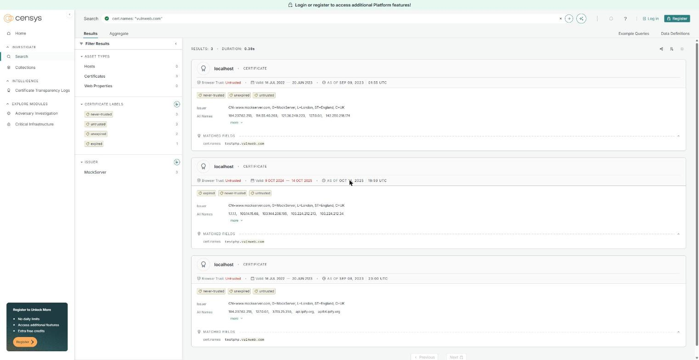
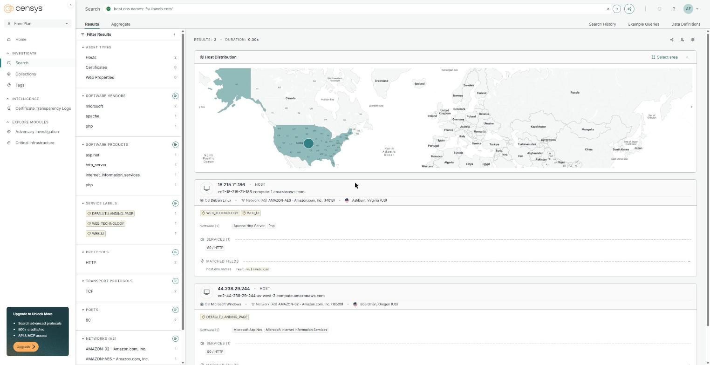
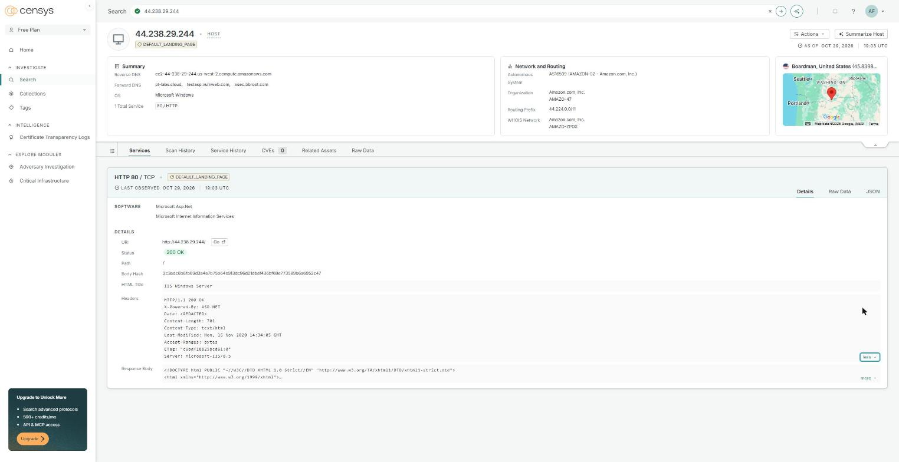
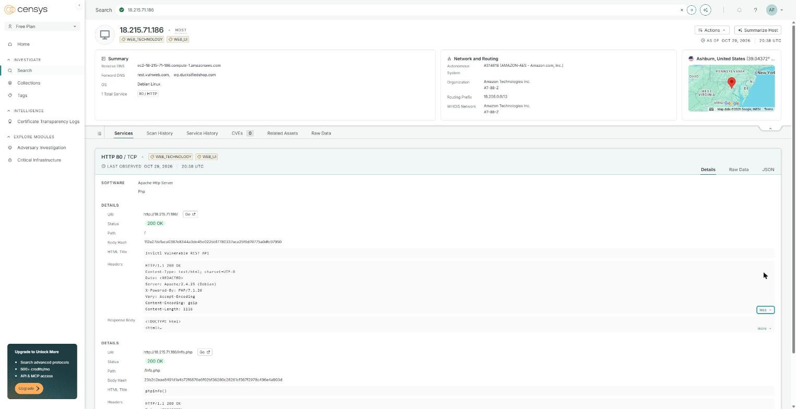
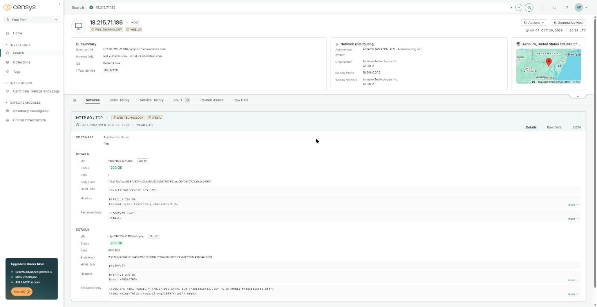
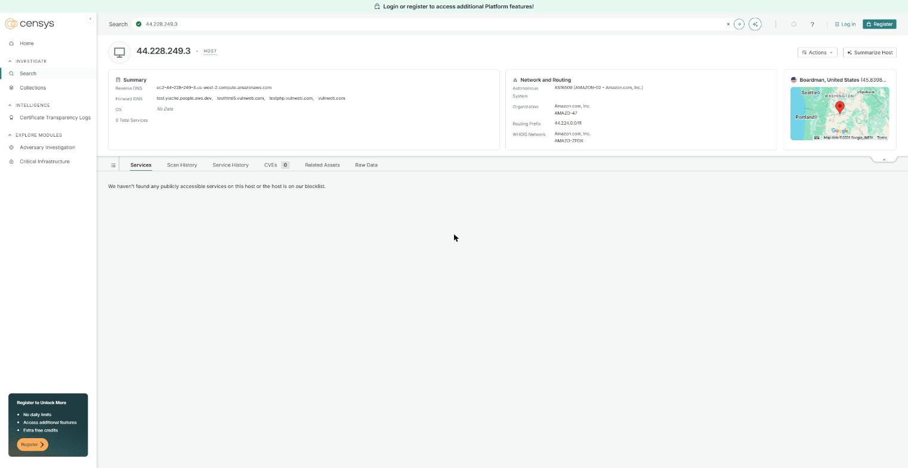
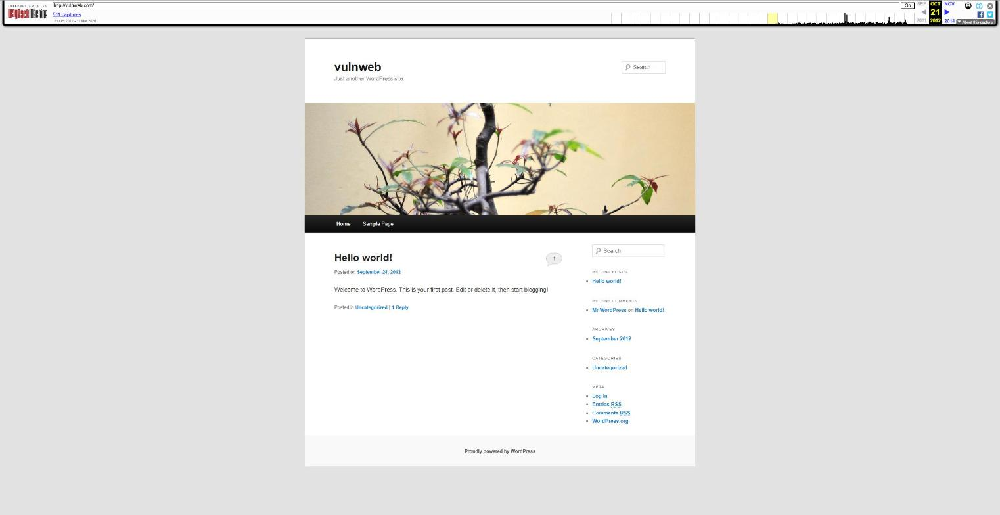
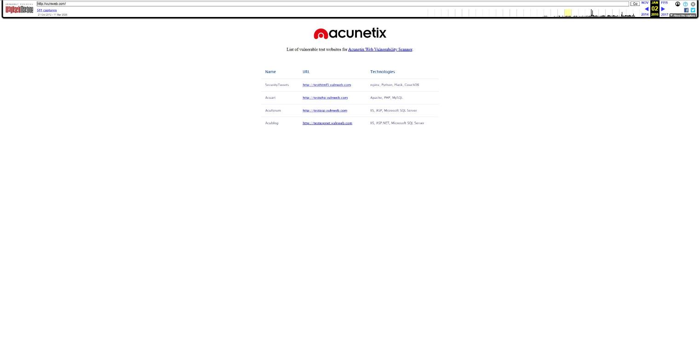
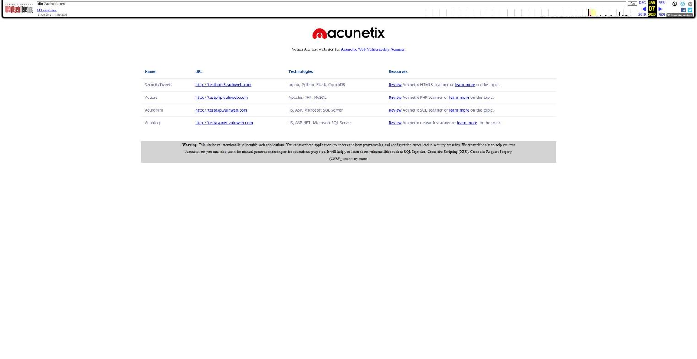
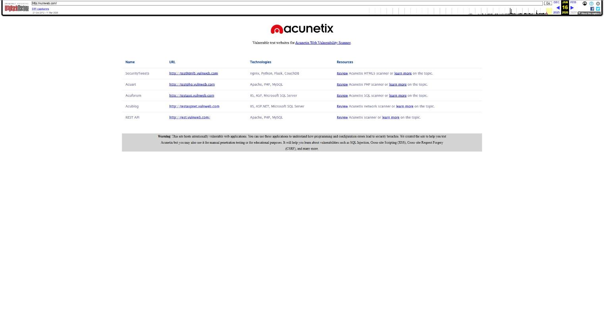

Resumen—Este informe documenta un reconocimiento pasivo (OSINT) sobre vulnweb.com, el dominio con el que Acunetix/Invicti publica aplicaciones web vulnerables a propósito para probar escáneres. Se hicieron seis búsquedas en Censys sobre certificados, puertos, servicios, versiones de software, geolocalización y proveedor de red. Se recuperaron cuatro versiones históricas del sitio en Wayback Machine (2012, 2016, 2020 y 2026) y se ejecutaron cinco variantes del comando whois, además de un whois de la IP y consultas DNS. El dominio, registrado en 2010 con Gandi a nombre de Invicti Security Limited (Malta), se aloja en tres IP de Amazon Web Services en Oregón y Virginia. Sus servicios solo atienden HTTP en el puerto 80, sin TLS, con software sin soporte (IIS 8.5 y PHP 7.1.26) y una página phpinfo() expuesta. Todo se obtuvo sin enviar tráfico de ataque al objetivo.
Palabras clave—OSINT, reconocimiento pasivo, Censys, Wayback Machine, WHOIS, DNS, vulnweb.com, huella digital.
El reconocimiento es la primera fase de una evaluación de seguridad. Su variante pasiva, el OSINT (Open Source Intelligence), reúne información de fuentes públicas (motores que escanean Internet, archivos históricos y registros de dominios) sin interactuar de forma intrusiva con el objetivo, así que el dueño del sistema difícilmente la detecta.
La consigna pedía un dominio que presentara posibles vulnerabilidades. Se eligió vulnweb.com porque cumple esa condición de forma legítima: sus subdominios (testphp, testasp, testaspnet, testhtml5 y rest) son aplicaciones vulnerables a propósito que el fabricante publica para que se practique sobre ellas [8]. Así el análisis puede nombrar debilidades concretas sin afectar a una organización real.
Los objetivos fueron: (1) caracterizar la superficie expuesta con seis búsquedas en Censys; (2) comparar al menos cuatro versiones históricas del sitio en Wayback Machine; y (3) contrastar los datos de registro con cinco variantes de whois.
kalilinux/kali-rolling), ejecutados el 29 de octubre de 2026.Como punto de partida, el DNS resuelve vulnweb.com, www, testphp y testhtml5 a 44.228.249.3; testasp y testaspnet a 44.238.29.244; y rest a 18.215.71.186. Los cuatro servidores de nombres son de Amazon Route 53 y el correo (MX) lo maneja Google (Fig. 1). Esas tres IP sirvieron de pivote para Censys.
┌──(root㉿kali)-[~] └─# dig +short vulnweb.com A; dig +short vulnweb.com NS; dig +short testphp.vulnweb.com A; dig +short vulnweb.com MX 44.228.249.3 ns-1588.awsdns-06.co.uk. ns-557.awsdns-05.net. ns-136.awsdns-17.com. ns-1450.awsdns-53.org. 44.228.249.3 10 alt1.aspmx.l.google.com. ... 10 aspmx.l.google.com.
Consulta: cert.names: "vulnweb.com"
Censys devolvió 3 certificados y ninguno es un certificado real de vulnweb.com (Fig. 2). Los tres los emitió MockServer (CN=www.mockserver.com, O=MockServer, L=London), una herramienta de pruebas que actúa como proxy y genera certificados al vuelo. Censys los marca como never-trusted y untrusted. Dos tienen una vigencia absurda, del 14 de julio de 2022 al 20 de junio de 2123, y el tercero (9-oct-2024 a 14-oct-2025) ya expiró. Su lista de nombres (SAN) mezcla direcciones y dominios ajenos, como 1.1.1.1, 127.0.0.1 o api.ipify.org, junto a testphp.vulnweb.com. Lo más probable es que alguien haya visitado testphp a través de un MockServer y el certificado generado haya quedado indexado.
La conclusión práctica es que no hay un certificado de una CA confiable para el dominio, lo que coincide con que sus sitios solo responden por HTTP (búsqueda 2).

Consulta: host.dns.names: "vulnweb.com"
La búsqueda devolvió 2 hosts (Fig. 3). Según los filtros de la izquierda, los dos tienen un único puerto abierto, el 80/TCP con HTTP; ninguno ofrece 443 (HTTPS). El tercer servidor, 44.228.249.3, que aloja la portada, testphp y testhtml5, no aparece en los resultados: al consultarlo directamente, Censys muestra 0 servicios y avisa que el host no tiene servicios visibles o está en su lista de bloqueo (Fig. 7). Ese vacío es en sí un dato, porque la fuente no cubre todo el objetivo y otra herramienta tendría que confirmarlo.

Al abrir cada host aparece el detalle del servicio HTTP (Fig. 4 y Fig. 5):


Las cabeceras HTTP indexadas por Censys revelan versiones exactas (Fig. 4 y Fig. 5):

Censys ubica 44.228.249.3 y 44.238.29.244 en Boardman, Oregón (45,84° N, −119,70° O), y 18.215.71.186 en Ashburn, Virginia (39,04° N, −77,49° O). Más que ciudades donde esté la empresa, son las regiones de AWS us-west-2 y us-east-1, como confirma el DNS inverso (ec2-…us-west-2.compute.amazonaws.com y …compute-1.amazonaws.com). El registrante, en cambio, está en Malta (sección V).

Las tres IP pertenecen a Amazon: 44.228.249.3 y 44.238.29.244 al sistema autónomo AS16509 (AMAZON-02), prefijo 44.224.0.0/11, y 18.215.71.186 al AS14618 (AMAZON-AES), prefijo 18.208.0.0/13. En el DNS directo de esas IP también aparecen dominios ajenos (pt-labs.cloud, xsec.bbroot.com, wp.ducksifiedshop.com, test.yiache.people.aws.dev). Son registros de terceros que apuntan a las mismas direcciones, algo frecuente con IP de nube que se reasignan, y muestran que una IP no basta para atribuir un servicio a un dueño.
Wayback Machine guarda 511 capturas de http://vulnweb.com/, del 21 de octubre de 2012 al 11 de marzo de 2026. Con la API CDX se listó una captura por año y se eligieron cuatro que marcan etapas distintas (Tabla I).
La primera captura no tiene nada que ver con Acunetix: es una instalación de WordPress recién creada, con el tema por defecto, el lema “Just another WordPress site”, la entrada de ejemplo “Hello world!” del 24 de septiembre de 2012 y el enlace Log in visible (Fig. 8). Para un atacante de esa época, era un CMS sin actualizar con el panel de acceso a la vista.

El dominio ya es el índice de “sitios web de prueba vulnerables” para el escáner de Acunetix. Es una página de HTML plano de menos de 1 KB, con una tabla de cuatro sitios y la tecnología de cada uno: SecurityTweets (testhtml5: nginx, Python, Flask, CouchDB), Acuart (testphp: Apache, PHP, MySQL), Acuforum (testasp: IIS, ASP, SQL Server) y Acublog (testaspnet: IIS, ASP.NET, SQL Server) (Fig. 9). El propio dueño publica la pila tecnológica, que normalmente es lo primero que un atacante intenta averiguar.

Se agrega una columna Resources, con enlaces a la revisión del escáner correspondiente, y una franja gris con una advertencia: los sitios son intencionalmente vulnerables y sirven para aprender sobre inyección SQL, XSS o CSRF (Fig. 10). La página pasa de unos 900 a unos 1 600 bytes.

La estructura se mantiene, pero aparece una quinta fila, REST API (rest.vulnweb.com: Apache, PHP, MySQL), que es justamente el host 18.215.71.186 de Censys (Fig. 11). La superficie de ataque del dominio creció de cuatro sitios a cinco, ahora también con una API.

| Fecha | Tamaño | Estructura y contenido |
|---|---|---|
| 21-oct-2012 | 2 498 B | WordPress por defecto, sin relación con Acunetix; login visible. |
| 02-ene-2016 | 897 B | Índice en HTML plano de 4 sitios de prueba con sus tecnologías. |
| 07-ene-2020 | 1 599 B | Columna de recursos y advertencia de sitios vulnerables. |
| 16-ene-2026 | 1 817 B | Quinto sitio: API REST (Apache, PHP, MySQL). |
En síntesis, el dominio pasó de un blog genérico a un catálogo de objetivos de práctica, y desde 2016 mantiene el mismo diseño mínimo. El historial también sirve para atribuir: el WordPress de 2012 muestra que el dominio tuvo otro uso antes del actual, y la tabla de tecnologías permite saber qué esperar de cada subdominio sin enviarle ni una petición.
Se ejecutaron cinco variantes de whois (protocolo del RFC 3912 [5], puerto 43/TCP), siguiendo los ejemplos del enunciado [6].
whois vulnweb.com (137 líneas)
Para un .com, el cliente consulta primero al registro (Verisign) y luego sigue la referencia al servidor del registrador, Gandi, de modo que la salida trae los dos registros. Del registro se obtiene la información técnica y del registrador los datos del titular: Invicti Security Limited, país MT (Malta). El resto de los datos personales aparece como REDACTED FOR PRIVACY y el correo es un alias de Gandi (Fig. 12).
┌──(root㉿kali)-[~] └─# whois vulnweb.com Domain Name: VULNWEB.COM Registrar: Gandi SAS Registrar IANA ID: 81 Updated Date: 2026-06-01T05:28:12Z Creation Date: 2010-06-14T07:50:29Z Registry Expiry Date: 2027-06-14T07:50:29Z Domain Status: clientTransferProhibited Name Server: NS-136.AWSDNS-17.COM NS-1450.AWSDNS-53.ORG Name Server: NS-1588.AWSDNS-06.CO.UK NS-557.AWSDNS-05.NET DNSSEC: unsigned ... (registrador: whois.gandi.net) ... Registrant Name: REDACTED FOR PRIVACY Registrant Organization: Invicti Security Limited Registrant Country: MT Registrant Email: e7c92ba2...@contact.gandi.net
whois -H vulnweb.com (107 líneas)
Devuelve los mismos datos pero omite el bloque TERMS OF USE de Verisign, 30 líneas menos. Es la opción práctica para guardar o procesar la salida.
whois -h whois.verisign-grs.com vulnweb.com (57 líneas)
Al fijar el servidor, el cliente ya no sigue la referencia al registrador. La respuesta es el registro “delgado” de Verisign: fechas, estado, servidores DNS y DNSSEC, pero ningún dato del titular (Fig. 13).
┌──(root㉿kali)-[~] └─# whois -h whois.verisign-grs.com vulnweb.com Domain Name: VULNWEB.COM Registry Domain ID: 1602006391_DOMAIN_COM-VRSN Registrar WHOIS Server: whois.gandi.net Creation Date: 2010-06-14T07:50:29Z Registrar: Gandi SAS Domain Status: clientTransferProhibited DNSSEC: unsigned (sin campos Registrant / Admin / Tech)
whois -p 43 vulnweb.com (137 líneas)
La salida es idéntica, línea por línea, a la de la variante 1, porque 43 ya es el puerto por defecto del protocolo. La opción sirve cuando un servidor WHOIS atiende en otro puerto.
whois --verbose vulnweb.com (141 líneas)
Agrega las líneas que muestran la cadena de consultas: primero Using server whois.verisign-grs.com y, tras el registro, Using server whois.gandi.net con la cadena enviada (Fig. 14). Así se ve de dónde sale cada dato.
┌──(root㉿kali)-[~] └─# whois --verbose vulnweb.com Using server whois.verisign-grs.com. Domain Name: VULNWEB.COM ... Using server whois.gandi.net. Query string: "vulnweb.com" Domain Name: vulnweb.com Registrar WHOIS Server: whois.gandi.net
El whois de 44.228.249.3 responde ARIN. La IP está en el bloque 44.192.0.0/10 (AMAZO-4), del que se subasignó 44.224.0.0/11 (AMAZO-ZPDX), ambos de Amazon.com, Inc. (Seattle) y con un comentario que remite a EC2. Esto coincide con el sistema autónomo que reportó Censys.
| Campo | Valor e implicación |
|---|---|
| Creación / expiración | 14-jun-2010 / 14-jun-2027: dominio con 16 años de antigüedad y vigente. |
| Última actualización | 01-jun-2026 (registro) y 14-oct-2026 (registrador). |
| Registrador | Gandi SAS (IANA 81), Francia. |
| Titular | Invicti Security Limited, Malta; el resto está oculto por privacidad. |
| Estado | clientTransferProhibited: bloqueo contra transferencias no autorizadas [7]. |
| DNS | 4 servidores de AWS Route 53 en cuatro TLD distintos (redundancia). |
| DNSSEC | unsigned: las respuestas DNS no están firmadas. |
| Hosting | Amazon EC2 (AS16509 y AS14618); correo en Google. |
Un detalle: el registrador anota la creación a las 05:50:29 y el registro a las 07:50:29 del mismo día. Es una diferencia de dos horas, seguramente de zona horaria, que muestra por qué conviene contrastar fuentes antes de citar una fecha exacta.
Cruzando las tres fuentes, y aclarando que en este dominio son debilidades intencionales, se identifican:
En un dominio de producción, cada punto sería un hallazgo para el informe: activar HTTPS con HSTS, actualizar o migrar los servidores, eliminar phpinfo(), ocultar las cabeceras de versión, quitar las páginas por defecto y firmar la zona con DNSSEC.